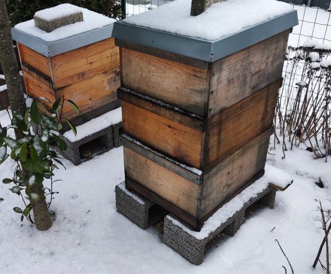
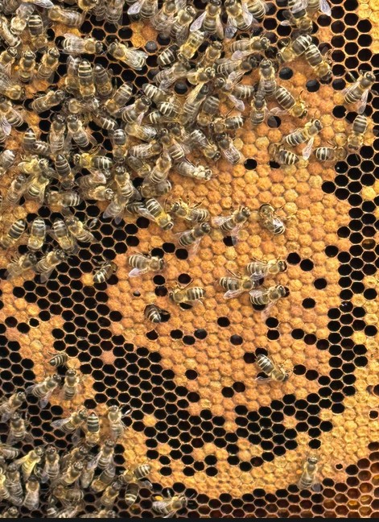

Willkommen bei der Bienen-AG der RPTU Kaiserslautern
Die Bienen-AG widmet sich mit Leidenschaft der Haltung und Pflege mehrerer Bienenvölker auf dem Campus der RPTU. Mit regelmäßiger Betreuung, fachkundigem Austausch und viel Engagement schaffen wir einen Raum, in dem Mensch und Biene einander näherkommen.
Ob Honigernte, praktische Einblicke in die Imkerei oder besondere Aktionen rund um das Bienenjahr – hier findet ihr alle aktuellen Informationen und Eindrücke rund um unsere Arbeit mit den Bienen.
Mitmachen erwünscht!
Du interessierst dich für Bienen, Nachhaltigkeit oder möchtest einfach mal bei einem Besuch am Bienenstand dabei sein? Dann sprich uns an – ob spontan, regelmäßig oder einfach nur neugierig: Jede helfende Hand ist willkommen!
Aktuelles

Jeden Donnerstag - Treffen im Fachbereichsgarten
Unsere Ag trifft sich jeden Donnerstag um 8 Uhr im Fachbereichsgarten der RPTU zur gemeinsamen Pflege der Bienenvölker.
Die Treffen dauern meistens 1h bis 1,5h.
Dabei werden die Bienenvölker durchgesehen, um Schwarmverhalten und Krankheiten vorzubeugen. Auch werden bei bedarf Ableger gemacht.
Ein weiteres Augenmerk liegt auf dem Honigeintrag, um Termine für Honigernten abschätzen zu können.
Neue Gesichter und Besucher sind jederzeit Willkommen.
Vorwissen ist nicht nötig.

28. Juli 2025 – Honigabgabe
Am um Uhr geben wir unseren Honig ab (Spenden sind willkommen).
Da wir eine AG sind dürfen wir nichts Verkaufen, und finanzieren das Projekt über Spenden.
Der übliche Honigpreis des Deutschen Imkerbundes liegt bei 7,50€ für 500g Honig.
Bei unserem Honig handelt es sich um ein gemisch aus Frühjahrstracht und Sommertracht mit einer Note Waldtracht.
Der Geschmack ist süß mit einer leicht würzigen Note. Ideal zum Kochen, für in Tee oder einfach als Brotaufstrich.
31. Juli 2025 –Honigernte
Am um 8 Uhr findet statt der üblichen Bienen-AG eine Honigernte statt. Genaueres wird wie immer bei den AG treffen bekannt gegeben.
31. Juli 2025 –Honigernte
Am um 8 Uhr findet statt der üblichen Bienen-AG eine Honigernte statt. Genaueres wird wie immer bei den AG treffen bekannt gegeben.
Die Bienen-AG
Die Bienen-AG der RPTU Kaiserslautern wird vom Lehrstuhl für Bioverfahrenstechnik getragen und fachlich betreut. Seit ihrer Gründung im Jahr 2013 kümmert sich die AG verantwortungsvoll um mehrere Bienenvölker auf dem Campus der Universität.
Das Team besteht aus etwa zehn engagierten Mitgliedern, die aus verschiedenen Fachrichtungen stammen. Gemeinsam pflegen sie die Bienenvölker, bilden Ableger, ernten Honig sowie schützen die Bienen vor Krankheiten und verhindern Schwärme.
Ziel der AG ist es, das Bewusstsein für die ökologische Bedeutung von Honigbienen zu stärken und die Imkerei praxisnah und fundiert zu vermitteln.
Neben der klassischen Imkerei stehen Wissensvermittlung, Teamarbeit und nachhaltiges Engagement im Fokus. Die AG versteht sich als fachlich fundierte und zugleich offene Gemeinschaft – sei es bei der Honigernte, der Bienengesundheit oder im Austausch mit Interessierten.
Honig
Bei der Honigernte der Bienen-AG halten wir uns selbstverständlich an alle gesetzlichen Vorgaben sowie die Qualitätsstandards des Deutschen Imkerbundes (DIB).
Unser Honig ist ein ausgewogenes Gemisch aus Frühjahrstracht und Sommertracht, ergänzt durch eine feine Note von Waldtracht.
Der Geschmack ist süß mit einer leicht würzigen Note – ideal zum Kochen, für Tee oder einfach als Brotaufstrich.
Wir bieten unseren Honig sowohl in flüssiger Form als auch cremig gerührt an, sodass für jeden Geschmack und Verwendungszweck etwas dabei ist.
Die Gewinnung unseres Honigs erfolgt traditionell und mit großer Sorgfalt: Zunächst setzen wir Bienenfluchten ein, um die Bienen aus den Honigwaben schonend zu entfernen, ohne die Tiere zu verletzen. Danach werden die Waben entdeckelt, das heißt, die dünne Wachsschicht, die die Honigzellen verschließt, wird vorsichtig entfernt, um den Honig freizulegen. Anschließend wird der Honig durch Schleudern aus den Waben extrahiert, wobei die Waben intakt bleiben und erneut genutzt werden können. Abschließend wird der Honig durch Sieben von Wachsteilchen, Pollenresten und anderen Verunreinigungen befreit, um ein reines und klares Produkt zu gewährleisten.
Die Honigernte erfolgt so schonend und verantwortungsvoll, dass die Bienenvölker bestmöglich geschützt und die natürliche Qualität des Honigs erhalten bleiben.
Forschung
Im Rahmen unserer Bienen-AG analysieren wir umfangreiche Sensordaten, die wir mittels modernster IoT-Technologie
direkt aus unseren Bienenvölkern erfassen. Zu den erfassten Parametern gehören:
Temperatur an verschiedenen Messstellen im Bienenstock
Luftfeuchtigkeit und Luftdruck
Gewichtsentwicklung des gesamten Stocks
Akustische Signale (Summverhalten, Schallpegel)
Diese Daten liefern uns detaillierte Einblicke in das Verhalten und die Gesundheit der Bienen über den Jahresverlauf.
Durch die kontinuierliche Überwachung lassen sich Schwankungen im Stockzustand frühzeitig erkennen und Rückschlüsse auf
Schwarmverhalten, Honigeintrag oder mögliche Krankheitsanzeichen ziehen.
Die Datenvisualisierung erfolgt in interaktiven Diagrammen, mit denen Trends und Anomalien zeitlich aufgelöst
und Zusammenhänge besser verstanden werden können.
Diese umfassende Datengrundlage eröffnet vielfältige Möglichkeiten für wissenschaftliche Auswertungen und praktische Anwendungen –
von der Optimierung der Bienenzucht bis hin zur Entwicklung neuer Methoden zur Bienengesundheit.
Unsere Sensordaten sind damit eine wertvolle Ressource für alle, die sich mit Bienenforschung oder angewandter
Bioverfahrenstechnik beschäftigen.
Für Forschende, Studierende und Projektgruppen, die an einer Nutzung unserer Sensordaten für wissenschaftliche Arbeiten,
Abschlussarbeiten oder Projektarbeiten interessiert sind, stehen wir gerne als Ansprechpartner zur Verfügung –
kontaktieren Sie uns bei Interesse!
📊 Livedaten der Bienenvölker |
📄 Forschungsergebnisse
Livedaten
Forschung und Technik
Die Bienen-AG der RPTU Kaiserslautern verbindet traditionelle Imkerei mit moderner Sensorik und Datenanalyse,
um den Zustand und das Verhalten ihrer Bienenvölker wissenschaftlich zu beobachten und nachhaltig zu fördern.
Erfasste Daten und Sensorik
Wir messen kontinuierlich verschiedene Parameter direkt im Bienenstock mit einem Netzwerk aus Sensoren:
Temperatur: Mehrere DS18B20-Sensoren überwachen die Temperatur an verschiedenen Positionen, um die optimalen Brutnestbedingungen präzise zu erfassen.
Luftfeuchtigkeit und Luftdruck: Ein AHT21-Sensor erfasst Luftfeuchtigkeit und Temperatur, während ein BMP280-Sensor den Luftdruck misst. Diese Umgebungsfaktoren beeinflussen das Bienenverhalten maßgeblich.
Gewicht: Eine hochpräzise Wägezelle (HX711) registriert das Gesamtgewicht des Stocks, was Rückschlüsse auf Honigertrag, Schwarmverhalten und mögliche Verluste erlaubt.
Akustik: Ein Mikrofonmodul zeichnet die Summtöne der Bienen auf. Die Analyse der akustischen Signale liefert Hinweise auf Stress, Schwarmstimmung oder Krankheiten.
Alle Sensoren sind an einen Mikrocontroller (ESP32) angeschlossen, der die Daten in Echtzeit sammelt
und per WLAN an eine Cloud-Datenbank (Firebase Realtime Database) überträgt.
Möglichkeiten und Nutzen der Datenanalyse
Früherkennung von Krankheiten und Schwärmen: Ungewöhnliche Veränderungen in Temperatur, Gewicht oder Akustik werden frühzeitig erkannt, sodass gezielte Maßnahmen möglich sind.
Optimierung der Bienenpflege: Die Daten unterstützen eine gezielte Pflege und Behandlung, z. B. durch angepasste Fütterung und Kontrolle der Brutentwicklung.
Verbesserung der Honigernte: Gewichtsentwicklungen zeigen den optimalen Zeitpunkt für die Honigernte an, was Verluste minimiert und die Qualität verbessert.
Wissenschaftliche Forschung: Die Daten bieten eine wertvolle Grundlage für das Verständnis der Bienenbiologie und -ökologie sowie für die Entwicklung praxisnaher Imkereimethoden.
Bildung und Öffentlichkeitsarbeit: Die Visualisierung der Daten in interaktiven Diagrammen auf unserer Webseite schafft Transparenz und fördert das Bewusstsein für Bienen und Umweltschutz.
Datenvisualisierung
Die gesammelten Daten werden mit der Bibliothek Chart.js in dynamischen, interaktiven Diagrammen auf unserer Webseite dargestellt.
Nutzer können zwischen verschiedenen Anzeige-Modi wählen, um die Entwicklung des Bienenstocks im Detail oder im Langzeitvergleich zu verfolgen.
Für Forschende, Studierende und Projektgruppen, die an einer Nutzung unserer Sensordaten für wissenschaftliche Arbeiten, Abschlussarbeiten oder Projektarbeiten interessiert sind,
stehen wir gerne als Ansprechpartner zur Verfügung – kontaktieren Sie uns bei Interesse!
StockWatch Dashboard - Livedaten
StockWatch Dashboard - Livedaten
Forschungsergebnisse
In diesem Abschnitt veröffentlichen wir unsere wissenschaftlichen Auswertungen und Resultate.
Honigabgabe
Hier veröffentlichen wir Informationen zu unserem Honig und wann er wo erhältlich sein wird. Bis genaue Termine bekannt sind bitte Aktuelles beachten.
News
Alle aktuellen Ereignisse und Ankündigungen.
Aktuelles
Jeden Donnerstag - Treffen im Fachbereichsgarten
Unsere Ag trifft sich jeden Donnerstag um 8 Uhr im Fachbereichsgarten der RPTU zur gemeinsamen Pflege der Bienenvölker.
Die Treffen dauern meistens 1h bis 1,5h.
Dabei werden die Bienenvölker durchgesehen, um Schwarmverhalten und Krankheiten vorzubeugen. Auch werden bei bedarf Ableger gemacht.
Ein weiteres Augenmerk liegt auf dem Honigeintrag, um Termine für Honigernten abschätzen zu können.
Neue Gesichter und Besucher sind jederzeit Willkommen.
Vorwissen ist nicht nötig.
28. Juli 2025 – Honigabgabe
Am um Uhr geben wir unseren Honig ab (Spenden sind willkommen).
Da wir eine AG sind dürfen wir nichts Verkaufen, und finanzieren das Projekt über Spenden.
Der übliche Honigpreis des Deutschen Imkerbundes liegt bei 7,50€ für 500g Honig.
Bei unserem Honig handelt es sich um ein gemisch aus Frühjahrstracht und Sommertracht mit einer Note Waldtracht.
Der Geschmack ist süß mit einer leicht würzigen Note. Ideal zum Kochen, für in Tee oder einfach als Brotaufstrich.
31. Juli 2025 –Honigernte
Am um 8 Uhr findet statt der üblichen Bienen-AG eine Honigernte statt. Genaueres wird wie immer bei den AG treffen bekannt gegeben.
31. Juli 2025 –Honigernte
Am um 8 Uhr findet statt der üblichen Bienen-AG eine Honigernte statt. Genaueres wird wie immer bei den AG treffen bekannt gegeben.